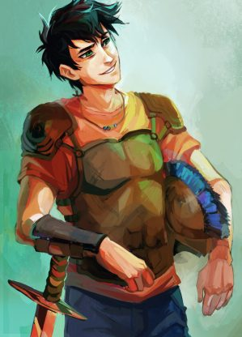

Percy Jackson

Percy Jackson, hijo de Poseidón.
- Descripción:
- Nombre:
- Perseus Jackson
- Altura:
- 183 cm
- Color de ojos:
- Verdes
- Color del pelo:
- Negro
- Libros en los que aparece:
-
Percy Jackson y los Dioses del Olimpo
- El Ladrón del Rayo
- El Mar de los Monstruos
- La Maldición del Titán
- La Batalla del Laberinto
- El Último Héroe del Olimpo
-
Los Héroes del Olimpo
- El Héroe Perdido
- El Hijo de Neptuno
- La Marca de Atenea
- La Casa de Hades
- La Sangre del Olimpo
-
Semidioses y Hechiceros
- El Hijo de Sobek
- El Bastón de Serapis
- La Corona de Ptolomeo
-
Las Pruebas de Apolo
- El Oráculo Oculto
- La Profecía Oscura
- Laberinto en llamas
- La Tumba del Tirano
- La Torre de Nerón
-
Magnus Chase y los Dioses de Asgard
- El Martillo de Thor
- El Barco de los Muertos
- Los 9 Mundos